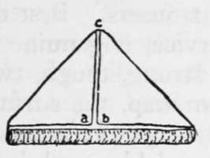
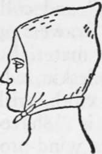

Clothing. Part 2
Description
This section is from the book "Camping And Woodcraft", by Horace Kephart. Also available from Amazon: Camping and Woodcraft.
Clothing. Part 2
I conclude that for cold weather, for work in high altitudes where changes of temperature are sudden and severe, and for deep forests where the night air is chilly, woolen underclothes should be worn. In hot climates, and for summer wear in open country, a mixture of silk and wool is best, but open-texture linen or cotton does very well. Pajamas should be of flannel, at all seasons, if one sleeps in a tent or out-of-doors.
Union Suits are not practical in the wilds. If you wade a stream, or get your legs soaked from wet brush or snow, you can easily take off a pair of drawers to dry them, but if wearing a union suit you must strip from head to foot. Moreover, a union suit is hard to wash, and it is a perfect haven for fleas and ticks — you can't get rid of the brutes without stripping to the buff.
Drawers must fit snugly in the crotch, and be not too thick, or they will chafe the wearer. Thef should be loose in the leg, to permit free knee action. Full-length drawers are best because they protect the knees against dirt and bruises, and safety-pins can be used to hold up the socks (garters impede circulation).
Socks
If trousers of full length are worn, then socks are preferable to stockings; they bulk less, weigh less, cost less, and are easier to wash. For forest travel, regardless of season, socks should be of soft wool, thick enough to cushion the feet and absorb moisture, and not closely knit but of rather open texture. But for open country, in hot sunny weather, cotton is better, because wool " draws " the feet at such times. On an all-day hike it pays to change to a fresh pair at noon.
The fit of socks is very important. If too loose, they wrinkle and chafe the feet; if too small, they are unendurable. To prevent woolen ones from shrinking is not difficult. Every night, or every time you come in with wet feet, remove your socks, put on fresh ones (having bathed the feet, of course), and put those you have worn to soak in a running stream; then draw them through the hand to squeeze out water, do not wring, but pull them gently into shape, and hang up to dry. On a long trip you will find means, now and then, to soak them in tepid suds, as they do not require a large vessel.
Take along enough socks so that when a pair gets " more holey than righteous " you can throw them away. Darned socks cause blisters, especially when a man does the darning.
Overshirts
For summer wear the U. S. A. chambray shirt is as good as any. It is durable, does not fade, and shows dirt and perspiration stains less than khaki or common outing shirts. Army shirts have two roomy Stanley pockets with buttoned flaps. These are just right for pipe and tobacco, note-book and pencil, or whatever you want handy at all times without crowding the trousers pockets.
Later in the season, or for a cool climate, the standard infantry or officer's service shirt of olive-tan wool is excellent. It is always natty, and wears better than common flannel. The cloth is shrunk before making up, but will do some more shrinking from repeated wettings and washings, so get a size larger than what is wrorn at home. Gray is also a good color for overshirts.
Neckerchiefs
A neckerchief worn with the peak in front is convenient to wipe perspiration from the face. Slewed around the other way, it shields the neck from sunburn. In a high wind, or in dense thickets, it can be used to hold the hat on by tying over the head; and it will protect one's ears when frost nips. It serves as a nightcap, or as a shield against insects, when folded and worn as shown in Figs. 89, 90.
Fig. 89. Neckerchief Folded for Hood.
Fig. 90. Neckerchief Hood Adjusted.
Lay the kerchief out flat, fold over the upper corners a and b till they meet, roll the square lower edge toward the triangle thus formed, place kerchief over head with the slit ac in front, tie extremities of the roll under chin, and over ab, with a reef knot.
The neckerchief should be large (the army size, 27x27 in., or navy, 36x36 in.) and of silk. Silk neckerchiefs in any desired color can be bought of military outfitters. The army or navy size can be used as a doubled triangular bandage (or cut into two of them) in emergency. Tied around the abdomen it helps to keep a man warm when he is caught out at night, and it is a good thing in case of cramps.
Trousers
Khaki, of standard army grade, is good for summer wear, as it is cool and can be washed. " Duxbak," or other closely woven crava-netted cotton, is better late in the season, since it sheds a good deal of wet and keeps out wind. Both of these materials dry readily. They are too noisy for still-hunting.
For cold weather the army trousers of olive-tan wool are good, unless one goes out for very rough travel. The woolen cloth called kersey is first choice in a cool, rainy climate, or wherever much wading is to be done. It is the favorite among those most practical of men. the log-drivers and lumberjacks generally.
Woolen trousers do not wear so well as firmly woven cotton ones. They " pick out " in brush, " snag," and collect burs. What has been said of cotton drawers applies also to trousers. Best of all trouser material, for rough service, is genuine English moleskin, which is a very strong, tough, twilled cotton cloth, with a fine pile or nap, the surface of which is " shaved " before dyeing. It wears like iron, is wind-proof, dries out quickly, and is comfortable in either warm or cold weather. Cheap moleskin is worthless.
Corduroy is easily torn, heavy, likely to chafe one, and it is notoriously hard to dry after a wetting. When wearing corduroy trousers there is a swish-swash at every stride that game can hear at a great distance.
Continue to: